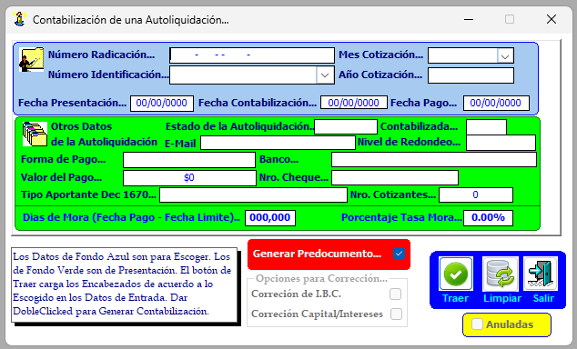

La Contabilización se utiliza para registrar contablemente las autoliquidaciones que ya fueron aplicadas en el sistema de Ley 100.
Su finalidad es trasladar la información de los aportes aplicados al sistema contable, para que queden reflejados en los registros financieros de la entidad

Al ingresar a Contabilización, el sistema genera un predocumento contable a partir de la autoliquidación ya aplicada que permite verificar que los débitos y créditos coincidan. Este predocumento no se modifica en esta etapa, sino que se revisa únicamente para validar que el valor esté en cero de diferencia.
Una vez validado el predocumento se envía para su generación definitiva. Este pasa al aplicativo de contabilidad, donde se convierte en un archivo contable formal.